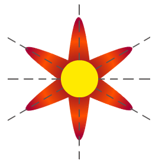
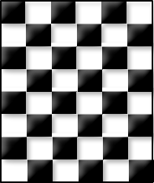

Reflectional symmetry is a kind of symmetry in which half of the image is exactly same as the other half. We can say that in reflectional symmetry, either left portion is the reflection of right portion or the upper portion is is the reflection of lower portion. In this type of symmetry, one can draw either a horizontal or a vertical line across the image. Reflectional symmetry is called so because half of the image is seemed to a perfect mirror image of other half. Reflectional symmetry is also known as reflection symmetry, bilateral symmetry, mirror symmetry or mirror-image symmetry. Examples of Reflectional Symmetry Reflectional symmetry can be seen almost everywhere in the nature. The image of a tree or a mountain in the river is a good example of horizontal symmetry, since we can draw a horizontal line which divides it in exactly same reflection. A butterfly is a fine example of vertical reflectional symmetry as shown in the figure below:
Rotational symmetry is a type of symmetry in which the image is rotated to a certain degree about at axis (generally center) and still look same as previous.Rotational symmetry does possess orders. When an image is rotated two times and looks same, it is said to have rotational symmetry of second order. Similarly, if an image is rotated three times and still is the same, then it possesses order three rotational symmetry, and so on.
Examples of Rotational Symmetry
Images formed by kaleidoscope are one of the best examples of rotational symmetry
The petals of a perfect sunflower also follow rotational symmetry as shown below in the figure:

A dart board may also be an example of rotational symmetry of order 10 :

A symmetry in which a particular pattern or design is shifted from one place to another, is known as translational symmetry. In other words, it is a type of symmetry in which a object changes its place without rotation or reflection. The exact same image is found on another place, even the orientation of the image is same. Examples of Translational Symmetry Translation symmetry is seen quite often in the real life. A chessboard is seemed to follow translation of black and white squares as shown below :  The pattern on room wallpaper follows translational symmetry. Wallpaper designs are the most common example of this type of symmetry. Following pattern is also an example of translational symmetry: The honeycomb is also a perfect example of this kind of symmetry.